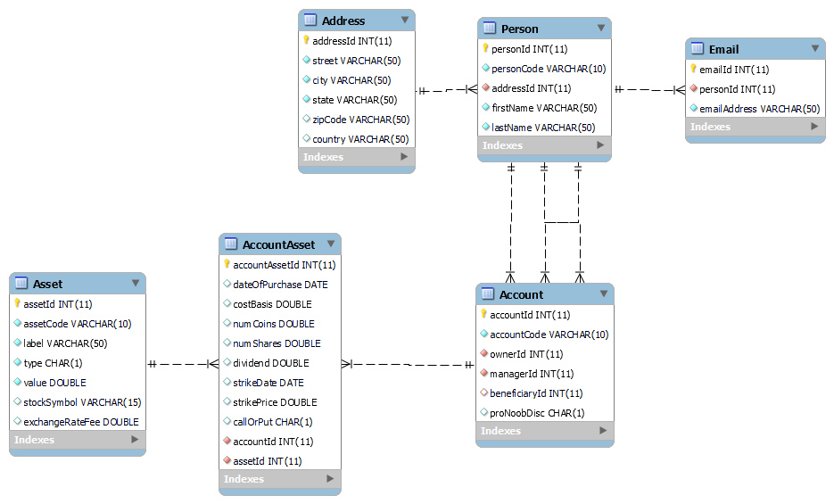

I completed this project for UNL's CS 156 class. Its main purpose is to store, compare, and print details of Business Accounts brokered with a fictional company "IFFI". It consists of accounts of two different types, which each have owners, managers, beneficiaries, and a list of assets. Each person has an adress and any number of emails. For assets, there are stocks, cryptocurrencies, properties, and options. Each has a function which returns the percent return on the investment. Each account also has a function for its total percent return, as well as a function for calulating its fees owed to IFFI, based on the assets that the account owns. I also built a Sorted List class, which can sort by any comparator, and which I use to print various reports, sorted by any field of data. I also built a database, and the functionality to read data from csv files, a database, or xml files.
This image displays the objects, the fields said objects contain and relationships between objects in my database.
This image is my uml diagram of the java project.